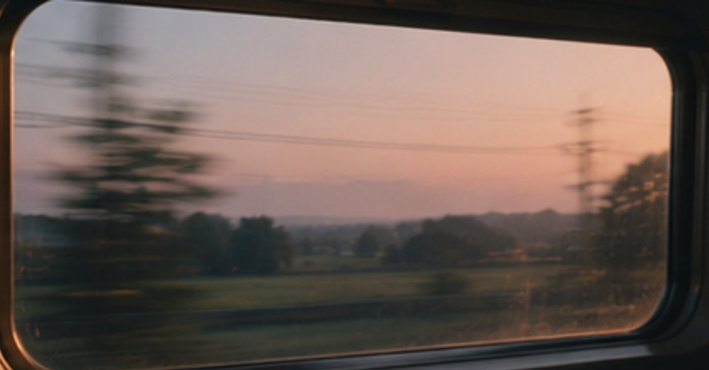

도착까지 15분
기차의 시간은 계속 흐릅니다. 무료 여행은 이벤트 역에 잠시 정차하고, 내릴지 계속 갈지는 이용자가 선택합니다.
TRAVEL TIMELINE
출발합니다
도시의 불빛이 뒤로 멀어집니다.
VIRTUAL TIME
04:32
도착까지 15분

기차의 시간은 계속 흐릅니다. 무료 여행은 이벤트 역에 잠시 정차하고, 내릴지 계속 갈지는 이용자가 선택합니다.
도시의 불빛이 뒤로 멀어집니다.
도착까지 15분
